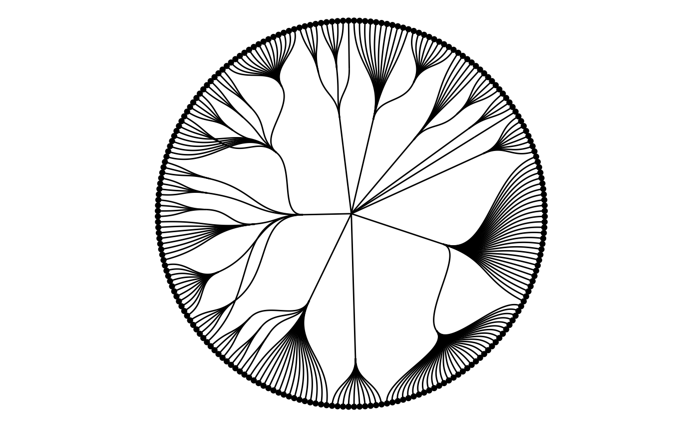

Nodes in a network are the entities that are connected. Sometimes
these are also referred to as vertices, but ggraph has
opted for this nomenclature and uses it consistently. While the nodes in
a graph are the abstract concepts of entities, and the layout is their
physical placement, the node geoms are the visual manifestation of the
entities. Conceptually one can simply think of it in terms of a scatter
plot — the layout provides the x and y coordinates, and these can be
used to draw nodes in different ways in the plotting window. Actually,
due to the design of ggraph the standard
scatterplot-like geoms from ggplot2 can be used
directly for plotting nodes:
library(ggraph)
library(tidygraph)
set_graph_style(plot_margin = margin(1,1,1,1))
gr <- as_tbl_graph(highschool)
ggraph(gr, layout = 'kk') +
geom_point(aes(x = x, y = y))
The reason this works is that, as discussed in the Layout vignette,
layouts return a data.frame of node positions and metadata
and this is used as the default plot data:
head(create_layout(gr, layout = 'kk'))## # A tibble: 6 × 5
## x y .ggraph.orig_index circular .ggraph.index
## <dbl> <dbl> <int> <lgl> <int>
## 1 2.34 1.34 1 FALSE 1
## 2 2.72 1.84 2 FALSE 2
## 3 3.32 1.31 3 FALSE 3
## 4 -2.54 0.884 4 FALSE 4
## 5 -1.76 1.95 5 FALSE 5
## 6 -0.357 3.33 6 FALSE 6
geom_node_*()
While usage of the default ggplot2 is absolutely
allowed, ggraph comes with its own set of node geoms. Many
of these are direct translations of ggplot2 own geoms like
geom_point() so one could wonder why bother to use
them.
The first reason is to provide clear code. It is not apparent
anywhere that the standard geoms are addressing the nodes and using
geom_node_*() makes it clear that this layer will draw
nodes.
The second reason is that it will save typing. Since
ggraph is in control of the shape of the input data through
the layout calculations, it knows that x and y
position is encoded in an x and y column. This
means that geom_node_* can default the x and y aesthetics
so there’s no need to type them:
ggraph(gr, layout = 'kk') +
geom_node_point()
sometimes there is a need for addressing the x and y aesthetics, which is still possible, for instance if a partition layout should be inverted:
gr <- tbl_graph(flare$vertices, flare$edges)
ggraph(gr, layout = 'partition') +
geom_node_tile(aes(y = -y, fill = depth))
of course this could also be accomplished by reversing the y-axis
using scale_y_reverse() so this is just to illustrate that
the defaults are easily overwritten if needed.
The third reason is for the added functionality. All
ggraph geoms get a filter aesthetic that
allows you to quickly filter the input data. The use of this can be
illustrated when plotting a tree:
ggraph(gr, layout = 'dendrogram', circular = TRUE) +
geom_edge_diagonal() +
geom_node_point(aes(filter = leaf)) +
coord_fixed()
In the above plot only the terminal nodes are drawn by filtering on the logical leaf column provided by the dendrogram layout.
The different node geoms
The usual suspects are of course provided in the form of
geom_node_point() (showcased above),
geom_node_text(), and geom_node_label(). These
work as expected, taking in the usual aesthetics (plus filter).
Only x and y are defaulted so everything else must be provided
e.g. label which does not default to the name column like
is done in igraph. One feature sets
geom_node_text() and geom_node_label() apart
from their ggplot2 counterparts: both have a
repel argument that, when set to TRUE, will
use the repel functionality provided by the ggrepel package to
avoid overlapping text. There is also geom_node_voronoi()
that plots nodes as cells from a voronoi tesselation. This is useful for
e.g. showing dominance of certain node types in an area as overlapping
is avoided:
graph <- create_notable('meredith') |>
mutate(group = sample(c('A', 'B'), n(), TRUE))
ggraph(graph, 'stress') +
geom_node_voronoi(aes(fill = group), max.radius = 1) +
geom_node_point() +
geom_edge_link() +
coord_fixed()
Apart from these geoms there’s a set of geoms mainly useful for
spatial node layouts such as treemaps, partition, circle packing, and
fabric. geom_node_tile() and geom_node_range()
are the ggraph counterpart to ggplot2s
geom_tile() and geom_linerange() while
geom_node_circle() and geom_node_arc_bar()
maps to ggforces geom_circle() and
geom_arc_bar(). Collective for these is that the spatial
dimensions of the geoms (e.g. radius, width, and height) are
precalculated by their intended layouts and defaulted by the geoms:
ggraph(gr, layout = 'treemap', weight = size) +
geom_node_tile(aes(fill = depth))
All spatial node geoms will be center-based, meaning that the x and y value of the layout will refer to the center of the layout and not e.g. the bottom-left corner. This makes it easier to add labels to spatial layouts as well as using spatial layouts in a non-spatial way:
l <- ggraph(gr, layout = 'partition', circular = TRUE)
l + geom_node_arc_bar(aes(fill = depth)) +
coord_fixed()
l + geom_edge_diagonal() +
geom_node_point(aes(colour = depth)) +
coord_fixed()More node geoms are sure to appear in ggraph with time
but they will generally be quite easily comprehensible due to their
strong resemblance to the standard ggplot2 geoms. After all
it is just points on a plane…